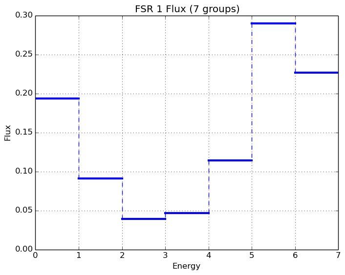
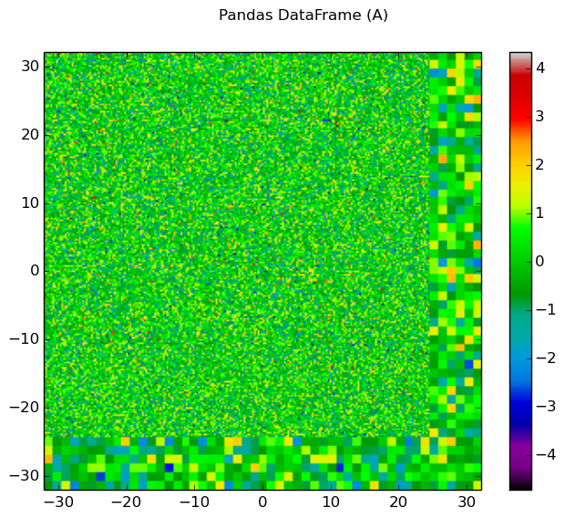
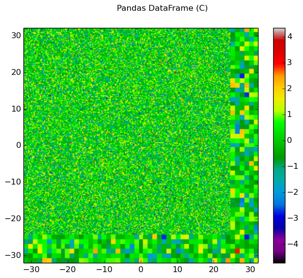

4. Data Processing and Visualization¶
This section is intended to explain in detail the recommended procedures for carrying out common tasks with OpenMOC. While several utilities of varying complexity are provided to help automate the process, in many cases it will be extremely beneficial to do some coding in Python to quickly obtain results. In these cases, and for many of the provided utilities, it is necessary for your Python installation to contain:
- Numpy - Required for array-based data manipulation and processing
- h5py - Required only if reading/writing HDF5 data files
- Matplotlib - Optional for plotting utilities
Each of these are easily obtainable in Ubuntu through the package manager.
4.1. Exporting Simulation Data¶
OpenMOC’s openmoc.process module provides the store_simulation_state(...) routine to export simulation data to binary output files. The only required parameter for the routine is a Solver object. Optional parameters may be used to indicate whether to store the data in HDF5 or as a Python pickle file (default), store the fluxes, sources, fission rates and more. All of the supported parameters are listed in Table 1, and the output variables stored in the binary file are tabulated in Table 2.
| Parameter | Type | Default | Optional | Note |
|---|---|---|---|---|
| solver | Solver object | None | No | |
| fluxes | boolean | False | Yes | Whether to store the FSR fluxes |
| sources | boolean | False | Yes | Whether to store the FSR sources |
| fission_rates | boolean | False | Yes | Whether to store the fission rates |
| use_hdf5 | boolean | False (pickle file) | Yes | Whether to use HDF5 |
| filename | string | ‘simulation-state’ | Yes | The filename for storage |
| directory | string | ‘simulation-states’ | Yes | The directory for storage |
| append | boolean | True | Yes | Append to a file or create a new one |
| note | string | None | Yes | Any comment on the simulation |
Table 1: Parameters for the openmoc.proces.store_simulation_state(...) routine.
| Output Variable | Type | Note |
|---|---|---|
| solver type | string | ‘CPUSolver’, ‘GPUSolver’, etc. |
| # FSRs | integer | |
| # materials | integer | |
| # energy groups | integer | |
| # tracks | integer | |
| # segments | integer | |
| track spacing [cm] | float | |
| # azimuthal angles | integer | |
| # polar angles | integer | |
| # iterations | integer | |
| source residual threshold | float | |
| exponential | string | ‘exp intrinsic’ or ‘linear interpolation’ |
| CMFD | boolean | True if CMFD is in use, False otherwise |
| floating point | string | ‘double’ or ‘single’ |
| time [sec] | float | Total time to converge the source |
| keff | float | |
| note | string | If requested by user |
| # threads | integer | For solvers on multi-core CPUs |
| # threads per block | integer | For solvers on GPUs |
| FSR scalar fluxes | float array | If requested by user |
| FSR sources | float array | If requested by user |
| fission rates | float array(s) | If requested by user |
Table 2: Output variables in a binary file created by the openmoc.proces.store_simulation_state(...) routine.
The code snippet below illustrates one possible configuration of parameters to the routine.
import openmoc.process
# Setup and run simulation
...
# Export the simulation data to an output file
openmoc.process.store_simulation_state(solver, use_hdf5=True)
4.2. Retrieving Simulation Data¶
Exporting simulation data is only useful if there is a straightforward means to retrieve it for data processing at a later time. OpenMOC’s restore_simulation_state(...) routine in the openmoc.process module can be used for this purpose. This routine takes a binary data file created by the store_simulation_state(...) routine, parses the file and catalogues the data in a Python dictionary, which it returns to the user. The parameters accepted by the routine are described in Table 3, while the dictionary keys are identical to the output variables given in Table 2.
| Parameter | Type | Default | Optional |
|---|---|---|---|
| filename | string | ‘simulation-state.pkl’ | Yes |
| directory | string | ‘simulation-states’ | Yes |
Table 3: Parameters for the openmoc.process.restore_simulation_state(...) routine.
The code snippet below illustrates one possible configuration of parameters to the routine.
import openmoc.process
# Retrieve the simulation state(s) stored in the 'states.h5' file
# and returns the data in a Python dictionary
simulation_state = openmoc.process.restore_simulation_state(filename='states.h5')
4.3. Computing Reaction Rates¶
4.3.1. Reaction Rates By Tally Mesh¶
The openmoc.process module supports reaction rate through structured Cartesian mesh tallies, similar to how one might compute such quantities in a Monte Carlo code such as MCNP, Serpent or OpenMC. The Mesh class allows one to tally a reaction rate in each of its structured cells. Table 4 below itemizes each of the property attributes of the Mesh class which can be used to tally reaction rates.
| Property | Type | Default | Note |
|---|---|---|---|
| dimension | list of integers | None | The number of mesh cells in each direction |
| lower_left | list of floats | None | The lower-left corner of the structured mesh |
| upper_right | list of floats | None | The upper-right corner of the structrued mesh |
| width | list of floats | None | The width of mesh cells in each direction (centimeters) |
Table 4: The Mesh class property attributes for tallying reaction rates.
Note
The Mesh is assumed to be perfectly coincident with the FSR mesh used in the OpenMOC calculation.
The Mesh.tally_fission_rates(...) class method is designed to compute fission rates using the 'fission' cross section in each Material in a simulation. The parameters accepted by this method are described in Table 5.
| Parameter | Type | Default | Optional |
|---|---|---|---|
| solver | Solver | None | No |
| volume | string | ‘integrated’ | Yes |
Table 5: Parameters for the Mesh.tally_fission_rates(...) method.
The code snippet below illustrates how one may compute a mesh fission rate tally for the /OpenMOC/sample-input/simple-lattice.py file. The fission rates are returned as a numpy.ndarray indexed by FSR.
import openmoc.process
# Setup and run simulation
...
# Create OpenMOC Mesh on which to tally fission rates
mesh = openmoc.process.Mesh()
mesh.dimension = [4, 4]
mesh.lower_left = [-2., -2.]
mesh.upper_right = [2., 2.]
mesh.width = [1., 1.]
# Tally OpenMOC fission rates on the Mesh and return NumPy array
fiss_rates = mesh.tally_fission_rates(solver)
Note
The 'fission' cross section must be supplied to each Material to compute fission rates even though it is not needed to perform a simulation.
The Mesh.tally_on_mesh(...) class method is designed to compute reaction rates more generally from a user-specified mapping of coefficients (e.g., cross sections) to each material, cell or FSR. The parameters accepted by this method are described in Table 6.
| Parameter | Type | Default | Optional |
|---|---|---|---|
| solver | Solver | None | No |
| domains_to_coeffs | dict | None | No |
| domain_type | string | ‘fsr’ | Yes |
| volume | string | ‘integrated’ | Yes |
| energy | string | ‘integrated’ | Yes |
Table 6: Parameters for the Mesh.tally_on_mesh(...) method.
The code snippet below illustrates how one may compile the groupwise coefficients (total cross sections) for each Material in a Python dict to supply to Mesh.tally_on_mesh(...) to compute a total reaction rate tally for the /OpenMOC/sample-input/simple-lattice.py file. The reaction rates are returned as a numpy.ndarray indexed by FSR.
import openmoc.process
import numpy as np
# Setup and run simulation
...
# Retrieve the Materials and number of groups from the geometry
materials = geometry.getAllMaterials()
num_groups = geometry.getNumEnergyGroups()
# Aggregate the total cross sections for each Material
# into a dictionary to pass to the mesh tally
domains_to_coeffs = {}
for material_id in materials:
domains_to_coeffs[material_id] = np.zeros(num_groups)
for group in range(num_groups):
domains_to_coeffs[material_id][group] = \
materials[material_id].getSigmaTByGroup(group+1)
# Tally volume-averaged OpenMOC total rates on the Mesh
tot_rates = mesh.tally_on_mesh(solver, domains_to_coeffs)
4.3.2. Fission Rates by Universe Level¶
The compute_fission_rates(...) routine in the openmoc.process module computes the fission rate for each Universe in the Geometry by summing up the fission rates in each Cell in the Universe. In most cases, a Universe is replicated in many places throughout the Geometry. To account for this, the routine will separately compute the fission rates for each unique placement of that Universe in the Geometry. By default, the fission rates will be exported to a Python pickle file, but may alternatively be exported to an HDF5 binary file. Each fission rate will be indexed by a string representing the “path” of Universes, Lattices and Lattice cell indices traversed through the Geometry to reach the flat source region of interest. Table 7 describes the parameters accepted by the routine.
| Parameter | Type | Default | Optional |
|---|---|---|---|
| solver | Solver object | None | No |
| use_hdf5 | boolean | False | Yes |
Table 7: Parameters for the openmoc.process.compute_fission_rates(...) routine.
The code snippet below illustrates one possible configuration of parameters to the routine.
import openmoc.process
# Setup and run simulation
...
# Compute and export the flat source region fission rates
openmoc.process.compute_fission_rates(solver, use_hdf5=True)
Note
The fission rates are computed for each nested universe level in the hierarchical geometry model.
Note
The fission rates are not normalized in any way - this is left to the user’s discretion during data processing.
4.4. Geometry Visualization¶
4.4.1. Plotting Tracks¶
To plot the tracks crossing the geometry, use the plot_tracks(...) routine in the openmoc.plotter module. The parameters accepted by this routine are described in Table 8.
| Parameter | Type | Default | Optional | Note |
|---|---|---|---|---|
| track_generator | TrackGenerator | None | No | The tracks of interest |
| get_figure | boolean | False | Yes | Whether to return the Matplotlib Figure |
Table 8: Parameters for the openmoc.plotter.plot_tracks(...) routine.
The code snippet below illustrates the use of this routine.
import openmoc.plotter
# Setup geometry and generate tracks
...
openmoc.plotter.plot_tracks(geometry)
A depiction of the tracks for the /OpenMOC/sample-input/simple-lattice.py example input file with 4 azimuthal angles and 0.1 cm track spacing is illustrated in Figure 1.

Figure 1: The tracks crossing a a 4  4 lattice.
4 lattice.
Note
The runtime required by the plotting routine scales with the number of tracks, which is proportional to the number of azimuthal angles and inversely proportional the track spacing.
4.4.2. Plotting Segments¶
To plot the segments crossing the geometry color-coded by flat source region, use the plot_segments(...) routine in the openmoc.plotter module. The parameters accepted by this routine are described in Table 9.
| Parameter | Type | Default | Optional | Note |
|---|---|---|---|---|
| track_generator | TrackGenerator | None | No | The tracks of interest |
| get_figure | boolean | False | Yes | Whether to return the Matplotlib Figure |
Table 9: Parameters for the openmoc.plotter.plot_segments(...) routine.
The code snippet below illustrates the use of this routine.
import openmoc.plotter
# Setup geometry and generate tracks
...
openmoc.plotter.plot_segments(geometry)
A depiction of the segments for the /OpenMOC/sample-input/simple-lattice.py example input file with 4 azimuthal angles and 0.1 cm track spacing is illustrated in Figure 2.

Figure 2: The segments crossing a a 4 4 lattice.
Warning
This routine will require a long time for large geometries or fine track discretization. In addition, Matplotlib consumes a substantial amount of memory to plot the segments and may throw a segmentation fault for large geometries.
Note
The runtime required by the plotting routine scales with the number of segments, which is proportional to the number of flat source regions and number of azimuthal angles and inversely proportional the track spacing.
4.4.3. Plotting by Material¶
To plot the geometry color-coded by the material ID’s throughout the geometry, use the plot_materials(...) routine in the openmoc.plotter module. The parameters accepted by this routine are described in Table 10.
| Parameter | Type | Default | Optional | Note |
|---|---|---|---|---|
| geometry | Geometry | None | No | The Geometry of interest |
| gridsize | integer | 250 | Yes | The pixel resolution |
| xlim | 2-tuple | None | Yes | The min/max  -coordinates to plot -coordinates to plot |
| ylim | 2-tuple | None | Yes | The min/max  -coordinates to plot -coordinates to plot |
| zcoord | float | None | Yes | The level along the  -axis to plot -axis to plot |
| get_figure | boolean | False | Yes | Whether to return the Matplotlib Figure |
| library | string | ‘matplotlib’ | Yes | The plotting library to use (‘matplotlib’ or ‘pil’) |
Table 10: Parameters for the openmoc.plotter.plot_materials(...) routine.
The code snippet below illustrates one possible configuration of parameters to the routine.
import openmoc.plotter
# Setup geometry
...
# Plot a 500 x 500 pixel image of the materials
openmoc.plotter.plot_materials(geometry, gridsize=500)
A depiction of the materials for the /OpenMOC/sample-input/simple-lattice.py example input file is illustrated in Figure 3.

Figure 3: A 4 4 lattice color-coded by material.
Note
The runtime required by the plotting routine scales with the number of pixels in the image (the square of the gridsize parameter).
4.4.4. Plotting by Cell¶
To plot the geometry color-coded by the cell ID’s throughout the geometry, use the plot_cells(...) routine in the openmoc.plotter module. The parameters accepted by this routine are described in Table 11.
| Parameter | Type | Default | Optional | Note |
|---|---|---|---|---|
| geometry | Geometry | None | No | The Geometry of interest |
| gridsize | integer | 250 | Yes | The pixel resolution |
| xlim | 2-tuple | None | Yes | The min/max -coordinates to plot |
| ylim | 2-tuple | None | Yes | The min/max -coordinates to plot |
| zcoord | float | None | Yes | The level along the -axis to plot |
| get_figure | boolean | False | Yes | Whether to return the Matplotlib Figure |
| library | string | ‘matplotlib’ | Yes | The plotting library to use (‘matplotlib’ or ‘pil’) |
Table 11: Parameters for the openmoc.plotter.plot_cells(...) routine.
The code snippet below illustrates one possible configuration of parameters to the routine.
import openmoc.plotter
# Setup geometry
...
# Plot a 500 x 500 pixel image of the cells
openmoc.plotter.plot_cells(geometry, gridsize=500)
A depiction of the cells for the /OpenMOC/sample-input/simple-lattice.py example input file is illustrated in Figure 4.

Figure 4: A 4 4 lattice color-coded by cell.
Note
The runtime required by the plotting routine scales with the number of pixels in the image (the square of the gridsize parameter).
4.4.5. Plotting by FSR¶
To plot the geometry color-coded by the flat source region ID’s throughout the geometry, use the plot_flat_source_regions(...) routine in the openmoc.plotter module. The parameters accepted by this routine are described in Table 12.
| Parameter | Type | Default | Optional | Note |
|---|---|---|---|---|
| geometry | Geometry | None | No | The Geometry of interest |
| gridsize | integer | 250 | Yes | The pixel resolution |
| xlim | 2-tuple | None | Yes | The min/max -coordinates to plot |
| ylim | 2-tuple | None | Yes | The min/max -coordinates to plot |
| centroids | boolean | False | Yes | Whether to plot the FSR centroids |
| marker_type | string | 'o' | Yes | The marker type to use for FSR centroids |
| marker_size | integer | 2 | Yes | The marker size to use for FSR centroids |
| get_figure | boolean | False | Yes | Whether to return the Matplotlib Figure |
| library | string | ‘matplotlib’ | Yes | The plotting library to use (‘matplotlib’ or ‘pil’) |
Table 12: Parameters for the openmoc.plotter.plot_flat_source_regions(...) routine.
The code snippet below illustrates one possible configuration of parameters to the routine.
import openmoc.plotter
# Setup geometry
...
# Plot a 500 x 500 pixel image of the flat source regions
openmoc.plotter.plot_flat_source_regions(geometry, gridsize=500)
A depiction of the flat source regions for the /OpenMOC/sample-input/simple-lattice.py example input file is illustrated in Figure 5.

Figure 5: A 4 4 lattice color-coded by flat source region.
Note
The runtime required by the plotting routine scales with the number of pixels in the image (the square of the gridsize parameter).
4.4.6. Plotting by CMFD Cell¶
To plot the geometry color-coded by the CMFD cells throughout the geometry, use the plot_cmfd_cells(...) routine in the openmoc.plotter module. The parameters accepted by this routine are described in Table 13.
| Parameter | Type | Default | Optional | Note |
|---|---|---|---|---|
| geometry | Geometry | None | No | The Geometry of interest |
| gridsize | integer | 250 | Yes | The pixel resolution |
| xlim | 2-tuple | None | Yes | The min/max -coordinates to plot |
| ylim | 2-tuple | None | Yes | The min/max -coordinates to plot |
| get_figure | boolean | False | Yes | Whether to return the Matplotlib Figure |
| library | string | ‘matplotlib’ | Yes | The plotting library to use (‘matplotlib’ or ‘pil’) |
Table 13: Parameters for the openmoc.plotter.plot_cmfd_cells(...) routine.
The code snippet below illustrates one possible configuration of parameters to the routine.
import openmoc.plotter
# Setup geometry and cmfd
...
# Plot a 500 x 500 pixel image of the CMFD cells
openmoc.plotter.plot_cmfd_cells(geometry, cmfd, gridsize=500)
A depiction of the flat source regions and CMFD cells for the /OpenMOC/sample-input/benchmarks/c5g7/c5g7-cmfd.py example input file is illustrated in Figure 6.

|

|
Figure 6: The flat source regions and CMFD cells for the C5G7 benchmark problem.
Note
The runtime required by the plotting routine scales with the number of pixels in the image (the square of the gridsize parameter).
4.5. Flux Visualization¶
The openmoc.plotter module includes routines to plot the scalar flux in space and energy, as detailed in the following sections.
4.5.1. Flux in Space¶
To plot the flat source region scalar fluxes in space, use the plot_spatial_fluxes(...) routine in the openmoc.plotter module. The parameters accepted by this routine are described in Table 14.
| Parameter | Type | Default | Optional | Note |
|---|---|---|---|---|
| solver | Solver | None | No | The Solver used to converge the source |
| energy_groups | list | [1] | No | Create separate plots for each energy group |
| norm | boolean | False | Yes | Whether to normalize fluxes to the mean |
| gridsize | integer | 250 | Yes | The pixel resolution |
| xlim | 2-tuple | None | Yes | The min/max -coordinates to plot |
| ylim | 2-tuple | None | Yes | The min/max -coordinates to plot |
| get_figure | boolean | False | Yes | Whether to return the Matplotlib Figure |
| library | string | ‘matplotlib’ | Yes | The plotting library to use (‘matplotlib’ or ‘pil’) |
Table 14: Parameters for the openmoc.plotter.plot_spatial_fluxes(...) routine.
The code snippet below illustrates one possible configuration of parameters to the routine.
import openmoc.plotter
# Setup geometry and generate tracks
...
# Setup solver and converge the source
...
# Plot the fluxes for energy groups 1 and 7 in 500 x 500 pixel images
openmoc.plotter.plot_spatial_fluxes(solver, energy_groups=[1,7], gridsize=500)
A depiction of the group 1 and 7 fluxes for the C5G7 benchmark (/OpenMOC/sample-input/benchmarks/c5g7) is illustrated in Figure 7.

|

|
Figure 7: The fast and thermal fluxes in the C5G7 benchmark problem.
Note
The runtime required by the plotting routine scales with the number of pixels in the image (the square of the gridsize parameter).
4.5.2. Flux in Energy¶
To plot the flux in energy for one or more flat source regions, use the plot_energy_fluxes(...) routine in the openmoc.plotter module. The parameters accepted by this routine are described in Table 15.
| Parameter | Type | Default | Optional | Note |
|---|---|---|---|---|
| solver | Solver object | None | No | The Solver used to converge the source |
| fsrs | list | None | No | The flat source region IDs of interest |
| group_bounds | list | None | Yes | The sequential bounds for each energy group |
| norm | boolean | True | Yes | Whether to normalize the flux across energy |
| loglog | boolean | True | Yes | Whether to use a log-log plotting scale |
| get_figure | boolean | False | Yes | Whether to return the Matplotlib Figure |
Table 15: Parameters for the openmoc.plotter.plot_energy_fluxes(...) routine.
The code snippet below illustrates one possible configuration of parameters to the routine.
import openmoc.plotter
# Setup geometry and generate tracks
...
# Setup solver and converge the source
...
# Plot the fluxes vs. energy for flat source regions 0 and 1
openmoc.plotter.plot_energy_fluxes(solver, fsrs=[0,1])
A depiction of the normalized 7-group fluxes for the sample pin cell problem (/OpenMOC/sample-input/pin-cell/pin-cell.py) is illustrated in Figure 8.

|
 |
{kind=link}
Figure 8: The normalized moderator and fuel flux for a simple PWR pin cell problem.
4.6. Fission Rate Visualization¶
The openmoc.plotter module includes routines to plot the energy-integrated fission rates in each flat source region. To plot the fission rates, use the plot_fission_rates(...) routine in the openmoc.plotter module. The parameters accepted by this routine are described in Table 16.
| Parameter | Type | Default | Optional | Note |
|---|---|---|---|---|
| solver | Solver | None | No | The Solver used to converge the source |
| norm | boolean | False | Yes | Whether to normalize fluxes to the mean |
| transparent_zeros | boolean | True | Yes | Whether to make all non-fissionable FSRs transparent |
| gridsize | integer | 250 | Yes | The pixel resolution |
| xlim | 2-tuple | None | Yes | The min/max -coordinates to plot |
| ylim | 2-tuple | None | Yes | The min/max -coordinates to plot |
| get_figure | boolean | False | Yes | Whether to return the Matplotlib Figure |
| library | string | ‘matplotlib’ | Yes | The plotting library to use (‘matplotlib’ or ‘pil’) |
Table 16: Parameters for the openmoc.plotter.plot_fission_rates(...) routine.
The code snippet below illustrates one possible configuration of parameters to the routine.
import openmoc.plotter
# Setup geometry and generate tracks
...
# Setup solver and converge the source
...
# Plot the fission rates in each FSR in a 500 x 500 pixel image
openmoc.plotter.plot_fission_rates(solver, gridsize=500)
A depiction of the energy-integrated FSR fission rates for the C5G7 benchmark (/OpenMOC/sample-input/benchmarks/c5g7) is illustrated in Figure 9.

Figure 9: The energy-integrated FSR fission rates in the C5G7 benchmark problem.
Note
The runtime required by the plotting routine scales with the number of pixels in the image (the square of the gridsize parameter).
4.7. Generalized Spatial Visualization¶
The openmoc.plotter module includes a generalized method to plot spatially-varying indexed by Material, Cell, or FSR. For general spatial plotting, use the plot_spatial_data(...) routine in the openmoc.plotter module. The parameters accepted by this routine are described in Table 17.
| Parameter | Type | Default | Optional | Note |
|---|---|---|---|---|
| domains_to_data | dict, numpy.ndarray, or pandas.DataFrame | None | No | Spatial domains-to-data mapping |
| plot_params | boolean | None | No | Plotting parametetrs |
| get_figure | boolean | False | Yes | Whether to return the Matplotlib Figure |
Table 17: Parameters for the openmoc.plotter.plot_spatial_data(...) routine.
Table 18 below itemizes each of the property attributes of the PlotParams class which can be used to customize images with generalized spatial plotting.
| Property | Type | Default | Note |
|---|---|---|---|
| geometry | Geometry | None | The Geometry to query when generating the spatial map |
| domain_type | string | ‘fsr’ | The domain type used to map spatial data to the geometry |
| filename | string | None | The filename string |
| extension | string | ‘.png’ | The image file extension (e.g., ‘.png’) |
| library | string | ‘matplotlib’ | The plotting library to use (‘matplotlib’ or ‘pil’) |
| zcoord | float | 0 | The level along the -axis to plot |
| gridsize | integer | 250 | The pixel resolution |
| xlim | 2-tuple | None | The min/max -coordinates to plot |
| ylim | 2-tuple | None | The min/max -coordinates to plot |
| title | string | None | The minor title string |
| suptitle | string | None | The major title string |
| norm | boolean | False | Normalize the plotted data to unity |
| transparent_zeros | boolean | False | Make zeros in the data appear transparent |
| interpolation | string | None | Interpolation used between points (e.g., ‘nearest’) |
| colorbar | boolean | False | Include a colorbar to the right of the plot |
| cmap | matplotlib.colormap | cmap('spectral') | A Matplotlib colormap for the plot |
| vmin | float | None | The minimum value used in colormapping the data |
| vmax | float | None | The maximum value used in colormapping the data |
Table 18: The PlotParams class property attributes for plot customization.
The generalied spatial plotter may be applied in a myriad of ways to create spatial plots of the geometry with user-defined data mapped to materials, cells or FSRs. The following code snippet illustrates the generation of three plots for three columns of randomized data mapped by FSR in a Pandas DataFrame:
import numpy as np
import pandas as pd
# Initialize a Pandas DataFrame with normally distributed random data
num_fsrs = geometry.getNumFSRs()
df = pd.DataFrame(np.random.randn(num_fsrs,3), columns=list('ABC'))
# Initialize a PlotParams object
plot_params = openmoc.plotter.PlotParams()
plot_params.geometry = geometry
plot_params.suptitle = 'Pandas DataFrame'
plot_params.filename = 'pandas-df'
plot_params.colorbar = True
# Enforce consistent color scheme across figures
plot_params.vmin = df.values.min()
plot_params.vmax = df.values.max()
openmoc.plotter.plot_spatial_data(df, plot_params)
|  | 
|
 |
{kind=link}
{kind=link}
Figure 10: The randomized spatial data for each of the three columns in a Pandas DataFrame for the C5G7 benchmark problem.
4.8. Angular Quadrature Visualization¶
To plot the angular quadrature deployed by a Solver in an MOC simulation, use the plot_quadrature(...) routine in the openmoc.plotter module. The parameters accepted by this routine are described in Table 19.
| Parameter | Type | Default | Optional | Note |
|---|---|---|---|---|
| solver | Solver | None | No | The Solver with the quadrature of interest |
| get_figure | boolean | False | Yes | Whether to return the Matplotlib Figure |
Table 19: Parameters for the openmoc.plotter.plot_quadrature(...) routine.
The code snippet below illustrates the use of this routine.
import openmoc.plotter
# Setup geometry and generate tracks
...
# Setup solver
...
openmoc.plotter.plot_quadrature(solver)
A depiction of the Tabuchi-Yamamoto polar quadrature used by default in OpenMOC is illustrated in Figure 11.

Figure 11: The Tabuchi-Yamamoto polar quadrature used as the default in OpenMOC.

Table Of Contents
- 4. Data Processing and Visualization